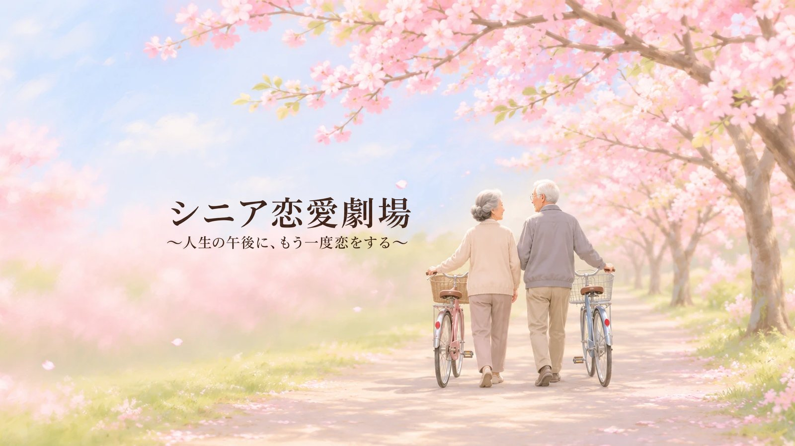
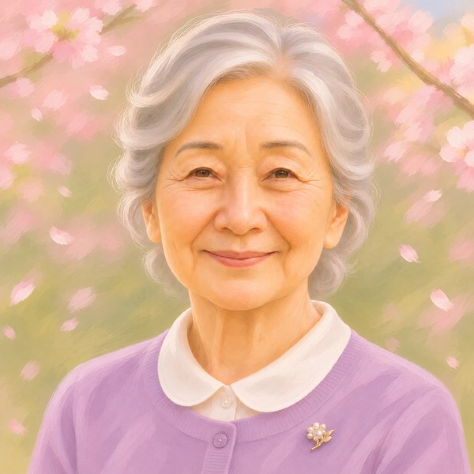

手が触れる。名前を呼ばれる。待ち合わせの、五分前。
「この年で恋なんて」「子どもにどう思われるか」「先に逝った人への想い」――
迷いを抱えながら、もう一度誰かを想う気持ちを、一本ずつ物語にしてお届けしています。
見てくださった方が「シニアでも恋をしていいんだ」と思える場所でありたいと願っています。

ふだんの暮らしのすぐそばで、もう一度、恋がはじまります。

町の保健婦として長く働き、赤ちゃん訪問からお年寄りの見守りまで、たくさんの人の人生に寄り添ってきた語り手です。 ほのかが見聞きしてきた恋模様をもとに、創作の物語を綴ります。
今夜も、少しだけ私の話を聞いてくださる？